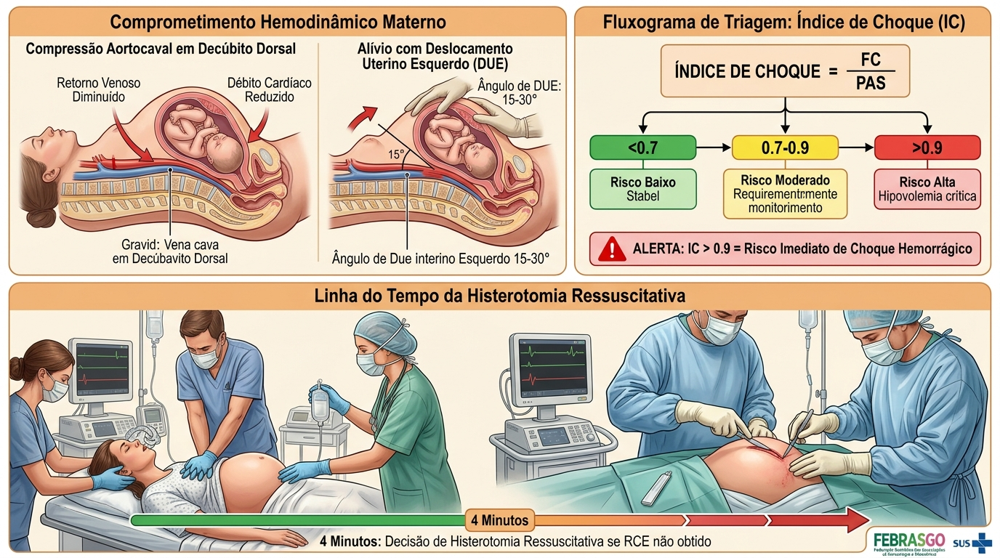
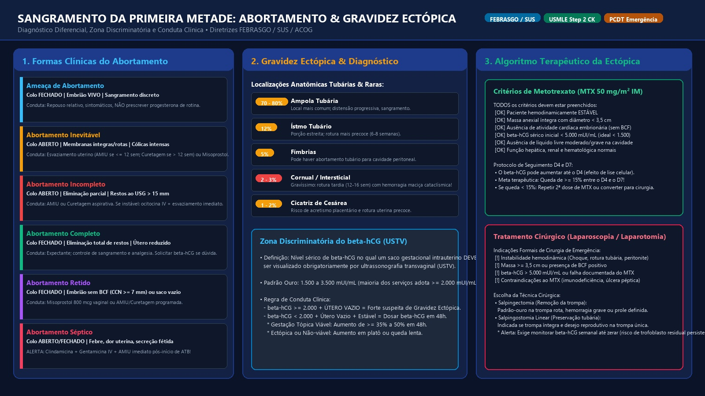
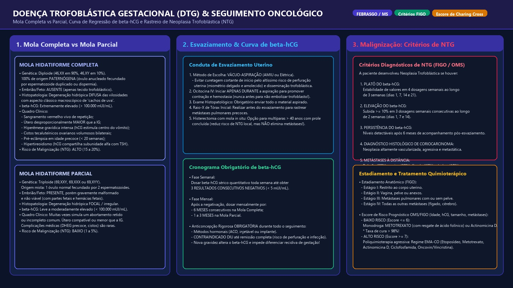
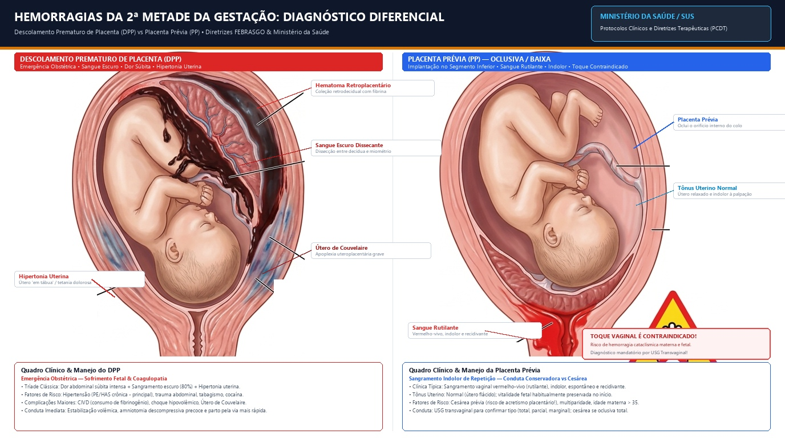
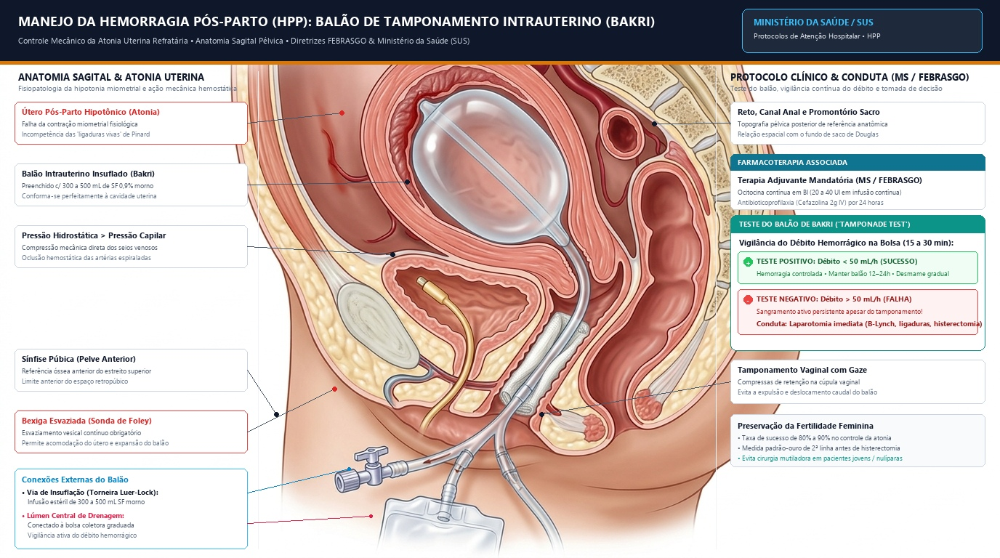
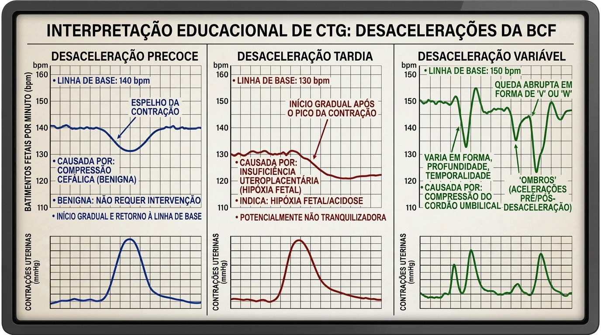
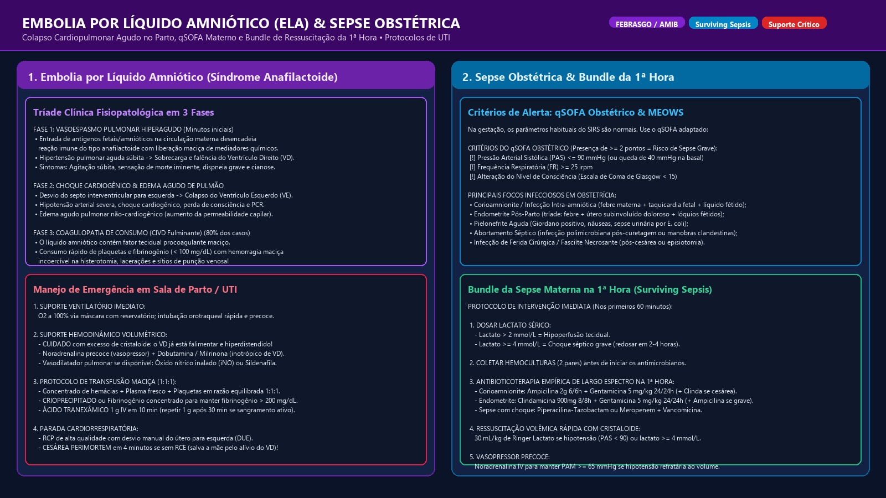

Nenhum módulo encontrado para a busca
Tente buscar por termos como "Choque", "Ectópica", "Zuspan", "HELLP", "Cordão" ou "ELA".
Abordagem Inicial da Emergência Obstétrica
A regra de ouro (salvar o barco para salvar o passageiro), alterações fisiológicas críticas, ABCDE obstétrico, escore MEOWS, índice de choque, transfusão maciça 1:1:1 e cesárea perimortem em 4 minutos.
O Barco e o Passageiro
A gestante é um barco com um passageiro (o feto). Se o barco afundar, o passageiro afunda junto. Logo, primeiro salvamos o barco (a mãe), e com isso salvamos o feto. O bebê só é retirado prioritariamente quando tirá-lo ajuda a salvar o barco — como na histerotomia perimortem que alivia o esmagamento da veia cava inferior!
Ressuscitação Materna = Fetal
Uma desaceleração ou bradicardia na cardiotocografia frequentemente é a primeira manifestação de que a mãe está entrando em choque hipovolêmico compensado, pois a circulação uteroplacentária não possui autorregulação e é a primeira sacrificada para preservar coração e cérebro maternos.
Fisiologia da Gravidez que Mascara e Altera a Emergência
| Alteração Fisiológica Normal | Impacto Clínico na Emergência | Conduta Obrigatória |
|---|---|---|
| Volume plasmático ↑ 40–50% | Perde até 1.500 mL antes de apresentar hipotensão (a PA mente!) | Monitorar Índice de Choque (FC/PAS); não confiar em PA isolada. |
| Compressão Aortocava (>= 20 sem) | Útero gravídico comprime primariamente a veia cava inferior (reduzindo retorno venoso e pré-carga) e a aorta em débito dorsal -> Débito cardíaco ↓ até 30% | Deslocamento Uterino para a Esquerda (DUE) 15–30° em toda manobra. |
| Estado Pró-coagulante Fisiológico | Fibrinogênio normal na gravidez é 400–600 mg/dL | Fibrinogênio < 200 mg/dL é sinal gravíssimo de CIVD e hemorragia maciça. |
| Capacidade Residual Funcional ↓ | Dessatura muito rápido em apneia durante sequência rápida de intubação | Pré-oxigenação com O₂ a 100% por 3–5 min; via aérea com tubo 0,5 a 1 mm menor. |
Choque Hemorrágico, Índice de Choque e Cesárea Perimortem (4 Minutos)

Anatomia da compressão aortocava e alívio com ângulo de 15–30°; fluxograma de triagem do Índice de Choque (FC/PAS); linha do tempo da Histerotomia Ressuscitativa em 4 minutos com RCP em andamento. Padrão SUS e FEBRASGO.
Calculadora do Índice de Choque Obstétrico (IC = FC ÷ PAS)
Protocolo de Transfusão Maciça (PTM 1:1:1)
• Razão 1:1:1: 1 Concentrado de Hemácias (CH) : 1 Plasma Fresco Congelado (PFC) : 1 Concentrado de Plaquetas (aférese ou pool).
• Ácido Tranexâmico: 1 g IV em 10 min até 3h do sangramento (Estudo WOMAN); repetir 1 g após 30 min se sangramento contínuo.
• Fibrinogênio: Se < 200 mg/dL, prescrever 10 U de Crioprecipitado ou 2 g de concentrado de fibrinogênio.
• Tríade Letal: Prevenir e tratar hipotermia, acidose e hipocalcemia (citrato consome cálcio -> Gluconato de Cálcio 10%).
Parada Cardíaca & Mnemônico BEAU-CHOPS
• B: Bleeding / DIC (Hemorragia maciça e coagulopatia)
• E: Embolism (Embolia amniótica, pulmonar ou gasosa)
• A: Anesthetic complications (Raquidiana alta, toxicidade)
• U: Uterine atony (Atonia pós-parto)
• C: Cardiac disease (Miocardiopatia periparto, dissecção)
• H: Hypertension / Preeclampsia / Eclampsia
• O: Other (5 H's e 5 T's do ACLS)
• P: Placenta (DPP ou Placenta prévia/acretismo)
• S: Sepsis (Choque séptico)
Abortamento: Diagnóstico Diferencial & Manejo Clínico-Cirúrgico
Definições internacionais (OMS vs ACOG), etiologia genética e anatômica, comparação das formas clínicas pelo orifício interno do colo, técnicas de esvaziamento (AMIU vs Curetagem) e incompetência istmocervical.
Classificação Clínica do Abortamento
| Forma Clínica | Orifício Cervical Interno | Vitalidade Fetal / USG | Conduta Recomendada |
|---|---|---|---|
| Ameaça | FECHADO | Embrião vivo com BCF presente | Repouso relativo, sintomáticos. Não usar progesterona se colo normal. |
| Inevitável | ABERTO | Membranas visíveis/rotas, cólicas intensas | Esvaziamento uterino (AMIU se ≤ 12 sem; Curetagem se > 12 sem) ou Misoprostol. |
| Incompleto | ABERTO | Eliminação parcial; eco endometrial > 15 mm | AMIU ou Curetagem aspirativa. Se instável: ocitocina IV + AMIU imediato. |
| Completo | FECHADO | Eliminação total; eco endometrial < 15 mm | Expectante. Confirmar beta-hCG em queda se houver dúvida com ectópica. |
| Retido | FECHADO | CCN ≥ 7 mm sem BCF ou saco ≥ 25 mm vazio | Misoprostol 800 mcg vaginal ou AMIU/Curetagem programada. (Contraindicado Misoprostol se suspeita/confirmação de gravidez ectópica ou DPP). |
| Séptico | ABERTO / FECHADO | Febre ≥ 38°C, dor à mobilização uterina, lóquios fétidos, taquicardia, leucocitose |
1ª Linha (SUS/PCDT/FEBRASGO): Ampicilina 2g EV 6/6h + Gentamicina 5mg/kg/dia EV + Metronidazol 500mg EV 8/8h. Se alergia grave a penicilina: Clindamicina 900mg EV 8/8h + Gentamicina 5mg/kg/dia EV. Controle de fonte: AMIU/aspiração uterina após início dos antibióticos (não postergar > 6h). ⚠ Se choque séptico: Piperacilina-Tazobactam 4,5g 6/6h ou Meropenem 1g 8/8h + Vancomicina 15–20mg/kg 12/12h + AMIU urgente. |
Incompetência Istmocervical (IIC) & Circlagem Cervical
• Quadro Clínico Clássico: Perdas gestacionais repetidas de segundo trimestre (16–22 semanas), caracterizadas por dilatação cervical indolor, protrusão de membranas em bolsa e expulsão fetal rápida sem contrações prévias dolorosas.
• Circlagem Cervical (Técnica de McDonald ou Shirodkar): Realizada eletivamente entre 12 e 14 semanas após ultrassom morfológico de 1º trimestre afastar anomalias cromossômicas.
• Fio Inabsorvível (Mercilene / prolene): Retirado ambulatorialmente com 36 a 37 semanas para permitir parto vaginal espontâneo, ou imediatamente se entrar em trabalho de parto ativo prematuro para evitar laceração cervical!
Gravidez Ectópica: Localização, Zona Discriminatória e Decisão Terapêutica
Topografia anatômica da trompa, zona discriminatória do beta-hCG (1.500–3.500 mUI/mL), critérios de inclusão do Metotrexato (MTX) e indicações cirúrgicas de emergência (Salpingectomia vs Salpingostomia).
Espectro do Abortamento, Topografia da Gravidez Ectópica & Algoritmo de MTX

Comparação das 6 formas de abortamento; localizações anatômicas da ectópica (ampola 80%, ístmo 12%, cornual 2%); zona discriminatória e critérios rigorosos para Metotrexato 50 mg/m² com curva D4/D7.
Calculadora de Elegibilidade ao Metotrexato (MTX na Ectópica)
Coexistência de gestação intrauterina e ectópica. Incidência rara na população geral (~1:30.000), mas atinge 1:100 a 1:1.000 em reprodução assistida (FIV). A visualização de saco gestacional intrauterino à ultrassonografia NÃO descarta ectópica concomitante em pacientes submetidas a FIV! Nesses casos, o MTX é contraindicado devido à gravidez tópica viável; a laparoscopia com salpingectomia seletiva é a conduta de escolha.
Doença Trofoblástica Gestacional: Mola Hidatiforme & Neoplasia (NTG)
Genética comparada (Mola Completa 46,XX vs Mola Parcial 69,XXY), aspiração uterina por vácuo, curva de regressão de beta-hCG, critérios FIGO de malignização e quimioterapia.
Mola Hidatiforme Completa vs Parcial, Seguimento e Diagnóstico de NTG

Patologia macroscópica em cachos de uva; cariótipo paternógeno vs triploide; cronograma semanal e mensal de dosagem do beta-hCG e estadiamento FIGO/OMS com quimioterapia EMA-CO.
Critérios FIGO para Diagnóstico de Neoplasia Trofoblástica (NTG)
Pela homologia estrutural da subunidade α entre hCG e TSH, títulos astronômicos de beta-hCG (> 100.000–200.000 mUI/mL) estimulam o receptor tireoidiano, provocando T4 livre elevado com TSH suprimido. Não tratar com antitireoidianos de rotina (metimazol/PTU), pois o quadro remite espontaneamente após a aspiração uterina e queda do hCG. Betabloqueador (propranolol) se taquicardia sintomática.
A gravidez deve ser evitada durante todo o seguimento (6 meses na mola completa, até 6 meses na parcial) para não confundir uma nova gestação com recidiva/NTG. O DIU é FORMALMENTE CONTRAINDICADO antes da negativação do beta-hCG pelo risco elevado de perfuração em útero amolecido e infecção. Prescrever anticoncepcional oral combinado (se sem contraindicações) ou progestagênio isolado + preservativo.
Hemorragias da Segunda Metade da Gestação & Espectro PAS
Diagnóstico diferencial das 5 grandes causas: DPP, Placenta Prévia, Rotura Uterina, Vasa Prévia e Rotura de Seio Marginal. Espectro do Acretismo Placentário (Acreta, Increta, Percreta) e tamponamento com Balão de Bakri.
DPP vs Placenta Prévia

Comparativo visual de sangue escuro com hipertonia (DPP) vs vermelho vivo indolor (PP) e profundidade de acretismo (PAS).
Balão de Bakri & Tamponamento

Manejo da hemorragia pós-parto atônica refratária com insuflação de 300 a 500 mL de SF 0,9% estéril morno (monitorar pressão intra-balão ≤ 150 mmHg). Tempo de permanência de 12 a 24 horas (máx 24h para prevenir infecção e necrose isquêmica).
Diagnóstico Diferencial das 5 Hemorragias da 2ª Metade
| Etiologia | Tipo de Sangue | Dor Abdominal | Tônus Uterino | Vitalidade Fetal | Conduta Chave |
|---|---|---|---|---|---|
| DPP | Escuro com coágulos (ou oculto em 20%) | INTENSA e súbita | HIPERTONIA (útero em tábua) | Sofrimento precoce / Óbito | Estabilizar + Cesárea de emergência (se feto vivo). Não retardar para ultrassom! Parto vaginal tolerado apenas se feto morto com estabilidade materna. ⚠ Alerta Crítico: Misoprostol é FORMALMENTE CONTRAINDICADO (risco de taquissistolia uterina catastrófica e agravamento do descolamento). |
| Placenta Prévia | Vermelho vivo brilhante, episódico | INDOLOR | Relaxado / Normal | Preservada inicialmente | NÃO FAZER TOQUE VAGINAL! USTV confirma o bordo placentário. Rastrear Espectro do Acretismo Placentário (PAS). Programar parto com 36–37 sem (ou cesárea imediata se sangramento incoercível). |
| Rotura Uterina | Variável (frequentemente oculto ou hemoperitônio) | Dor lancinante súbita que cessa subitamente | Perda de tônus / partes palpáveis no abdome / parada das contrações | Morte / Bradicardia grave sustentada | Laparotomia exploradora imediata + Histerorrafia ou Histerectomia. Sinais de alerta em TOLAC (cesárea prévia): dor contínua na cicatriz, parada de progressão, sinal de Bandl-Frommel e recuo da apresentação fetal (sinal de Clark). |
| Vasa Prévia | Vermelho vivo imediatamente na rotura de membranas | Indolor | Normal | Bradicardia/Morte fetal quase imediata | Cesariana ultra-emergente! O sangue exteriorizado é de origem fetal. Rastreio antenatal: Doppler colorido transvaginal no 2º trimestre em fatores de risco (inserção velamentosa, placenta bilobada/sucenturiada, FIV). |
| Rotura de Seio Marginal | Discreto vermelho vivo periparto | Indolor | Normal | Normal / Excelente | Diagnóstico de exclusão; conduta expectante sob vigilância hemodinâmica e cardiotocográfica. |
Planejamento Multidisciplinar para Espectro do Acretismo Placentário (PAS - Placenta Accreta Spectrum)
• Cistoscopia se suspeita de invasão vesical (percreta).
• Reserva obrigatória de hemocomponentes: 6–10 CH + 4–6 PFC + plaquetas + crioprecipitado (PTM sob alerta).
• Programar resolução eletiva entre 34 e 35+6 semanas após corticoterapia para maturação pulmonar.
• Incisão uterina fúndica ou corporal alta para extração fetal, contornando a placenta.
• NUNCA tentar descolar a placenta forçadamente! Dequitação manual forçada deflagra hemorragia cataclísmica.
• Histerectomia cesariana programada com placenta mantida in situ se invasão miometrial (increta/percreta).
• Monitorar coagulopatia de consumo, gasometria e débito urinário.
• Manter fibrinogênio sérico acima de 200 mg/dL.
• Profilaxia mecânica e farmacológica precoce para TEV (heparina 12h pós-operatório se hemostasia estável).
• Restrito a centros de referência terciária, desejo reprodutivo imperioso, estabilidade hemodinâmica e PAS focal.
⚠ Riscos graves: sepse puerperal tardia, sangramento secundário incoercível e necessidade de histerectomia de urgência em 30–50% dos casos.
Pré-Eclâmpsia com Sinais de Gravidade, Eclâmpsia & Esquemas de MgSO₄
Definições formais de gravidade (PA ≥ 160/110 mmHg, plaquetopenia < 100.000/mm³, creatinina > 1,1 mg/dL ou duplicação, AST/ALT > 2x LSN, edema agudo de pulmão e sintomas visuais/cerebrais persistentes), esquemas de Sulfato de Magnésio (Zuspan padrão ouro vs Pritchard vs Sibai), monitorização de magnesemia sérica e controle anti-hipertensivo rápido.
Fisiopatologia da Pré-Eclâmpsia, Infusão de Sulfato de Magnésio e Síndrome HELLP

Disfunção endotelial multissistêmica; protocolos comparados de Zuspan e Pritchard; tríade de intoxicação magnésica e diagnóstico de HELLP com esquizócitos.
Calculadora de Esquemas de MgSO₄ & Manejo de Intoxicação
• Toxicidade progressiva: Reflexo patelar abolido com ~10 mEq/L; depressão respiratória com > 12–15 mEq/L; assistolia com > 25 mEq/L.
• Antídoto Materno: Gluconato de Cálcio a 10% 10 mL (1 g) IV em 3 a 5 minutos.
• Antídoto Neonatal: RN com depressão por magnésio transplacentário: Gluconato de Cálcio 10% 100 mg/kg (1 mL/kg) IV lento.
Guia Posológico de Anti-Hipertensivos de Ação Rápida
Síndrome HELLP: Critérios de Tennessee / Mississippi & Diagnóstico Diferencial
Tríade laboratorial (Hemólise microangiopática, AST/ALT ≥ 70 U/L, Plaquetas < 100.000/mm³), classificação prognóstica de Mississippi (Classes 1, 2 e 3), resolução da gestação como cura definitiva, corticoterapia antenatal (Betametasona 12 mg IM 2 doses com intervalo de 24h se < 34 sem com estabilidade materna), e diferenciação rigorosa com Esteatose Hepática Aguda da Gestação (AFLP) pelos Critérios de Swansea.
Classificador da Síndrome HELLP (Critérios de Tennessee & Mississippi)
Diagnóstico Diferencial Crítico: HELLP vs Esteatose Hepática Aguda (AFLP)
| Parâmetro | Síndrome HELLP | Esteatose Hepática Aguda (AFLP) |
|---|---|---|
| Glicemia | Normal | HIPOGLICEMIA GRAVE (< 50 mg/dL) |
| Coagulograma / Fibrinogênio | Geralmente normal no início | COAGULOPATIA PRECOCE (INR alto, Fibrinogênio baixo) |
| Amônia Sérica & Encefalopatia | Rara | FREQUENTE (Amônia elevada, letargia precoce) |
| Associação Genética Fetal | Não estabelecida | Deficiência da LCHAD fetal (exige triagem do neonato) |
Critérios de Swansea para Diagnóstico de Esteatose Hepática Aguda da Gestação (AFLP)
O diagnóstico clínico de AFLP é estabelecido na presença de ≥ 6 dos 14 critérios de Swansea (na ausência de outra explicação diagnóstica):
2. Dor abdominal (epigástrica/hipocôndrio D)
3. Polidipsia / Poliúria (diabetes insipidus nefrogênico)
4. Encefalopatia hepática / Letargia / Confusão
5. Bilirrubina total > 0,8 mg/dL (> 14 μmol/L)
7. Ácido úrico sérico elevado (> 340 μmol/L)
8. Leucocitose importante (> 11.000/mm³)
9. Ascite ou hiperecogenicidade hepática no US
10. Elevação de transaminases (AST ou ALT > 42 U/L)
12. Disfunção renal (Creatinina > 1,7 mg/dL)
13. Coagulopatia precoce (TP > 14s ou TTPA > 34s)
14. Biópsia hepática: microesteatose gordurosa (raramente necessária)
⚠ Genética: Associação com deficiência da LCHAD fetal.
Sepse Obstétrica & Bundle de Ressuscitação na 1ª Hora
Identificação precoce pelo MEOWS (Modified Early Obstetric Warning Score) – validado e superior ao qSOFA na gestante –, principais focos infecciosos (corioamnionite, endometrite pós-parto, aborto séptico e pielonefrite), controle imediato de fonte cirúrgica e o pacote de intervenção imediata da Surviving Sepsis Campaign adaptado à obstetrícia.
Bundle de Ressuscitação da 1ª Hora (Checklist Clínico)
Prolapso de Cordão Umbilical: Manobras de Alívio & Cardiotocografia
Emergência cirúrgica máxima com bradicardia aguda após amniorrexe. Elevação manual da apresentação fetal, posição genupeitoral/Trendelenburg, infusão vesical e cesárea sob código vermelho.
Padrões de Cardiotocografia: DIP I, DIP II e Desacelerações Variáveis (DIP III)

Classificação das desacelerações intraparto: DIP precoce cefálico (DIP I), DIP tardio hipóxico (DIP II) e DIP variável por compressão funicular (DIP III) no prolapso de cordão.
Examinador introduz a mão na vagina e empurra a apresentação cefálica para cima, aliviando a compressão sobre o cordão até a extração fetal no bloco!
Manter a gestante de joelhos com o peito no leito (prece maometana) ou em Trendelenburg acentuado para usar a gravidade a favor do descolamento fetal.
Passar sonda Foley e instilar 300 a 500 mL (preferir 300 mL de SF 0,9% morno para evitar sobredistensão/rotura vesical) na bexiga; clampar a sonda. A bexiga distendida mantém o pólo fetal elevado (desclampar antes da incisão uterina!).
Código vermelho de cesariana ultra-emergente. Parto vaginal só é tentado se a dilatação for total com polo fetal já desprendendo no períneo!
Distócia de Ombros: Sinal da Tartaruga & Algoritmo HELPERR
Impacto do ombro anterior contra a sínfise púbica materna, sinal da tartaruga, protocolo estruturado HELPERR com cronômetro de 5 minutos e proibição absoluta da manobra de Kristeller.
Mecanismo do Impacto Ósseo, Manobra de McRoberts e Pressão Suprapúbica (Rubin I)

Anatomia do descolamento da sínfise púbica pela hiperflexão das coxas (McRoberts) e vetor de pressão suprapúbica em sentido adutor no ombro anterior.
Simulador Passo a Passo do Algoritmo HELPERR
1. Help (Pedir Ajuda)
Manobra Sequencial do Algoritmo Internacional ALSO / ACOG• Ombro impactado: Notificar qual ombro estava impactado (anterior vs posterior) e direção da rotação.
• Sequência de manobras: Ordem exata de execução das manobras (ex: McRoberts → Rubin I suprapúbica → Rubin II/Woods rotacional → Remoção do braço posterior), destacando a manobra exitosa.
• Exame neonatal imediato: Índices de Apgar (1º e 5º min), gasometria de cordão umbilical (artéria), palpação simétrica de clavículas e úmeros, e avaliação neurológica da motricidade de membros superiores (pesquisa de lesão de plexo braquial / paralisia de Erb-Duchenne).
Embolia por Líquido Amniótico (ELA / Síndrome Anafilactoide)
Colapso cardiopulmonar anafilactoide periparto, hipertensão pulmonar aguda com falência de VD, CIVD fulminante — fibrinogênio < 150–200 mg/dL = gatilho de reposição imediata (crioprecipitado 10U ou concentrado de fibrinogênio 2–4g), suporte intensivo e protocolos de histerotomia de emergência (cesárea perimortem).
Fisiopatologia da ELA em 3 Fases, Falência de VD e Bundle da Sepse

Tríade da ELA (choque cardiogênico de VD, hipóxia e CIVD com sangramento incontrolável); suporte com inotrópicos, vasodilatadores pulmonares, restrição de volume e protocolo de transfusão maciça precoce.
Diagnóstico Diferencial: ELA vs Tromboembolismo Pulmonar (TEP)
• Embolia por Líquido Amniótico (ELA): Início hiperagudo periparto ou pós-parto imediato. Tríade: colapso cardiorrespiratório fulminante, choque cardiogênico de VD e CIVD imediata com hipofibrinogenemia severa e sangramento profuso. Conduta: suporte hemodinâmico inotrópico (dobutamina/milrinona), vasopressor precoce, intubação rápida e hemostasia agressiva com PTM e crioprecipitado (anticoagulação é contraindicada!).
• Tromboembolismo Pulmonar Maciço (TEP): Frequentemente associado a fatores de risco trombofílicos, cesárea recente, imobilização ou TVP prévia. Quadro: dispneia súbita, dor torácica pleurítica, taquicardia, hipóxia, sem coagulopatia hemorrágica inicial. Confirmação por Angio-TC de tórax ou ecocardiograma com sobrecarga de VD. Conduta: anticoagulação plena com Heparina Não Fracionada IV ou trombólise química/cirúrgica se choque obstrutivo refratário.
PCR Materna: Regra dos 4–5 Minutos & Critérios de Viabilidade
• Deslocamento Uterino Manual para a Esquerda (DULE): Manter contínuo durante as manobras de RCP de alta qualidade (100–120 compressões/min) para aliviar a compressão da veia cava inferior.
• Indicação e Critério Anatômico: Gestação com idade gestacional ≥ 20 semanas OU Altura Uterina ≥ 20 cm (fundo uterino ao nível ou acima da cicatriz umbilical).
• Regra dos 4 a 5 Minutos: Se não houver retorno da circulação espontânea (RCE) em 4 minutos de manobras de ressuscitação de alta qualidade, iniciar histerotomia de emergência no próprio local da parada (sem transportar para o bloco cirúrgico!).
• Objetivo Duplo: Extração fetal até o 5º minuto maximiza a sobrevida fetal e descomprime instantaneamente os vasos cava/ilíacos, aumentando o retorno venoso materno e as chances de ressuscitação materna bem-sucedida.
Top 20 Regras de Ouro: Os Primeiros Passos que a Banca Quer
Mapeamento das decisões prioritárias mais cobradas no USMLE Step 2 CK, Step 3, Revalida e Concursos de Residência Médica.
beta-hCG imediato (nunca assuma que não está grávida!).
Cirurgia de emergência (não aguardar dosagens seriadas de beta-hCG ou USTV formal).
Ultrassom. TOQUE VAGINAL FORMALMENTE CONTRAINDICADO até descartar placenta prévia!
Estabilizar + Cesárea (DPP é diagnóstico clínico; ultrassom negativo NÃO afasta!).
Cesariana de emergência imediata (Vasa Prévia; o sangue perdido é fetal!).
Anti-hipertensivo rápido em até 30–60 min (Hidralazina IV, Labetalol IV ou Nifedipina VO).
Sulfato de Magnésio imediato para prevenção de convulsões (Zuspan ou Pritchard).
Sulfato de Magnésio (MgSO₄ é superior a diazepam e fenitoína na eclâmpsia!).
Suspender MgSO₄ + Gluconato de Cálcio 10% 10 mL IV lento.
Hemograma + LDH + AST/TGO (suspeitar de HELLP syndrome ou rotura hepática!).
Toque vaginal imediato pesquisando Prolapso de Cordão Umbilical.
Elevação manual contínua da cabeça fetal + posição genupeitoral/Trendelenburg + código vermelho de cesariana ultra-emergente.
Chamar ajuda + McRoberts + Pressão Suprapúbica. Kristeller é FORMALMENTE PROIBIDO!
Cesárea perimortem no local da parada se sem retorno da circulação espontânea após 4 minutos (nascimento no 5º minuto).
AAS 100 a 150 mg VO à noite de 12–16 semanas até 36 semanas se ≥ 1 fator de alto risco (PE prévia, nefropatia, HAS crônica, DM pré-gestacional, SAF/LES, gestação múltipla) ou ≥ 2 fatores moderados.
Flashcards Clínicos 3D de Emergência
Fixação dos conceitos de maior impacto e condutas de segundo a segundo nas urgências obstétricas.
Carregando pergunta...
Carregando resposta...
Simulado Interativo: 14 Vinhetas Clínicas
Casos clínicos reais das provas do USMLE Step 2 CK, Step 3, Revalida e Concursos Nacionais de Residência Médica.